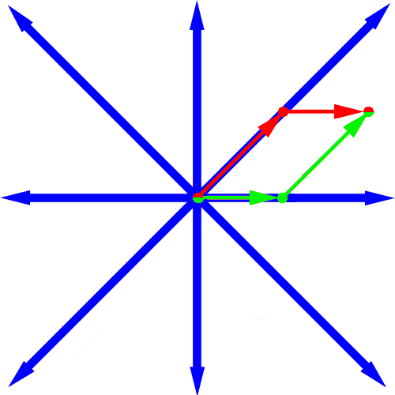

It makes sense to distribute the allowable directions evenly. If we allow only n directions, one will be east and the others will be evenly distributed among all other possible directions. So if n is 3, the three directions are east, 30 degrees west of north, and 30 degrees west of south. Adjacent directions then differ by 120 degrees. Notice that if a direction is legal the opposite direction may not necessarily be legal.
The following picture shows a minimum way to fly to a destination which is 5 east and 3 north of the starting point when n is 8. The 8 allowable directions are shown in blue. By flying a distance of 3*sqrt(2) northeast, and then 2 east (or 2 east, and then 3*sqrt(2) northeast) we can get to our destination by travelling a total distance of 3*sqrt(2) + 2. Notice that for any n and destination the minimal distance can be achieved using no more than two directions.

Create a class Airways that contains a method distance that is given n (the number of legal directions), east (the distance eastward to our destination), and north (the distance northward to our destination). It returns the minimum distance we will have to fly to get to our destination under these requirements.